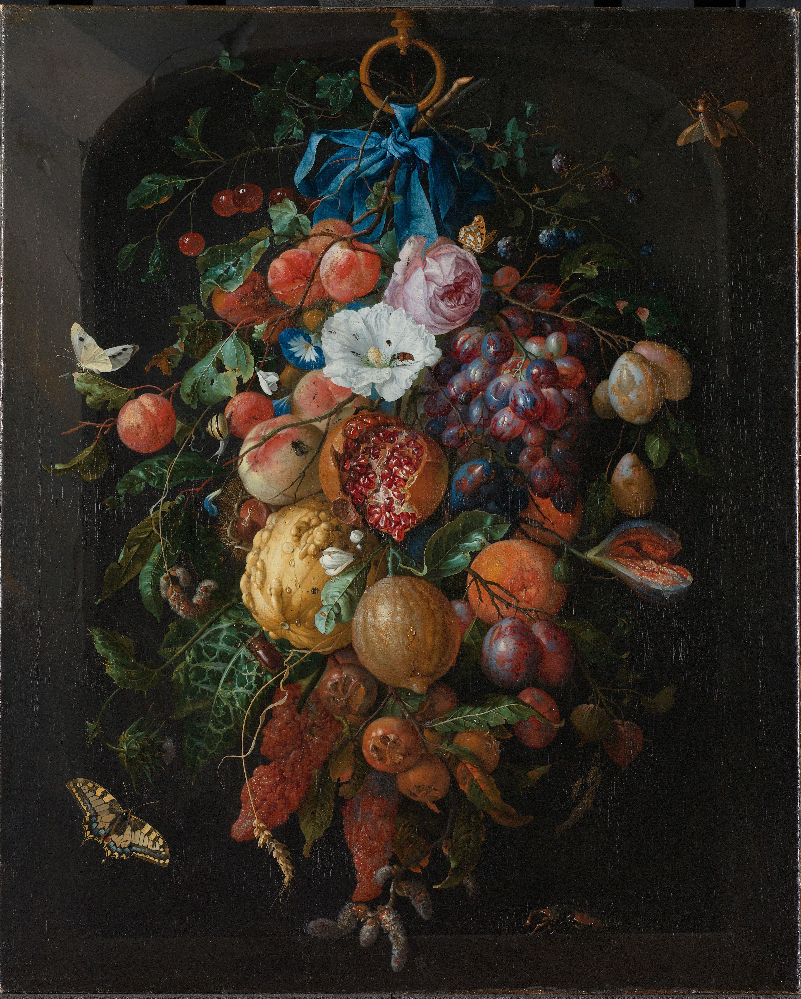
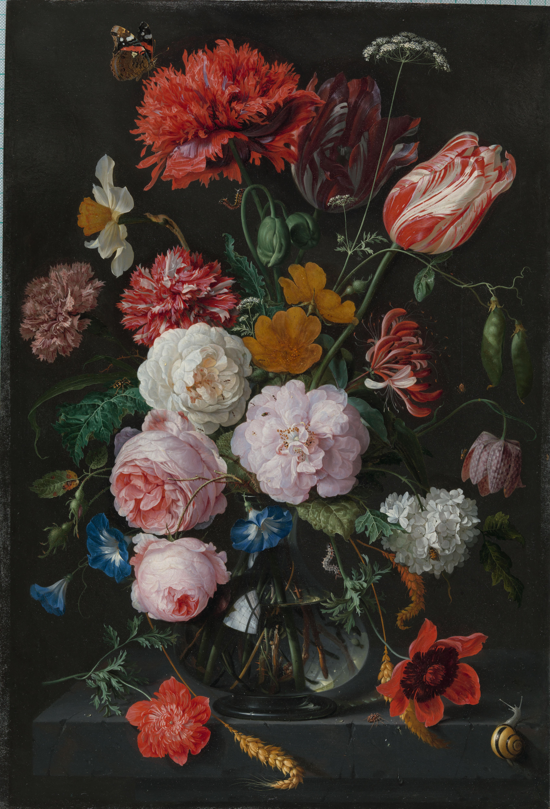
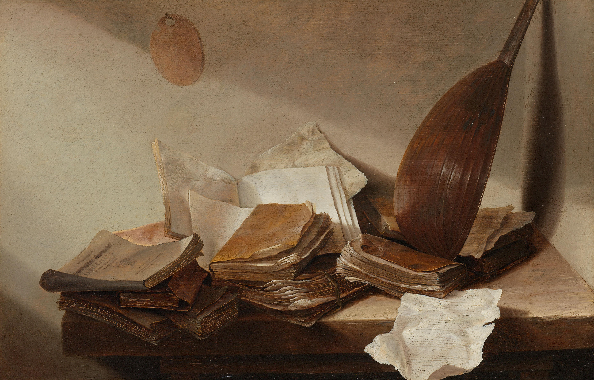

DÉDALE DES COULEURS
L’art contemporain et classique, à portée de clic.
Découvrez nos œuvres, rencontrez nos artistes et poussez la porte de la galerie, à Paris.
Une galerie à taille humaine, au cœur de Paris
Installée au 10 rue de la République, la galerie Dédale des couleurs est née de la passion de son fondateur, Monsieur Dechewsky, pour la peinture et ceux qui la font vivre. Au fil des années, il a bâti une sélection d’œuvres exigeante, où styles, époques et techniques se répondent, comme dans un dédale dont chaque détour réserve une surprise.
Ici, pas besoin d’être expert pour se sentir à l’aise : Monsieur Dechewsky accompagne chaque visiteur, du collectionneur averti à celui qui cherche sa première toile, avec conseils personnalisés et expositions renouvelées tout au long de l’année.
Aujourd’hui, la galerie ouvre ses portes en ligne pour partager ses découvertes avec tous les amateurs d’art, d’où qu’ils viennent.
Venez découvrir l’exposition Vie Silencieuse du 19 octobre au 18 janvier 2027 à la galerie Dédale des couleurs.

Jan Davidsz. de Heem, 1660-1670

Jan Davidsz. de Heem, 1650-1683

Jan Davidsz. de Heem, 1628-1629
Informations
- Adresse : 10 Rue de la République, 75000 Paris
- Tel : 01.63.45.85.56
- Email : dedale@gmail.com
Horaires d’ouverture :
Une question sur une toile ?
Écrivez-nous :